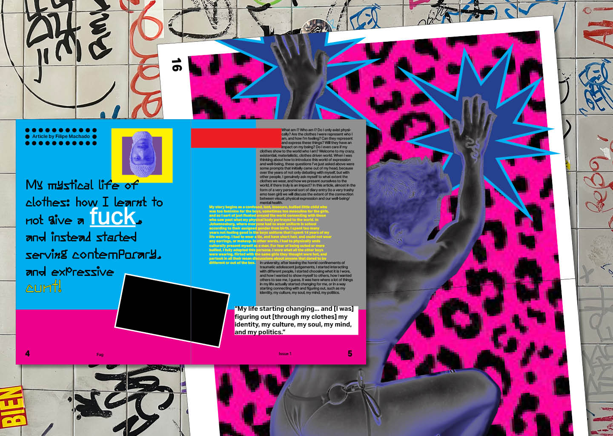
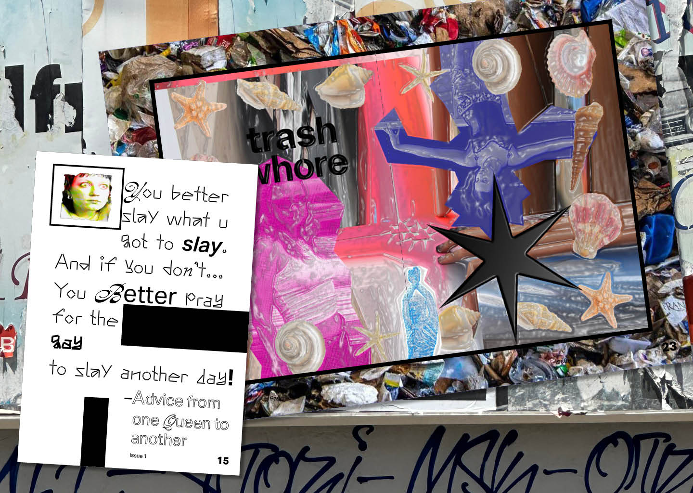
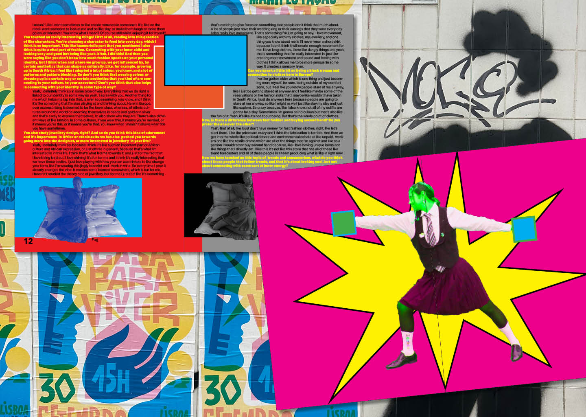

Fag
2023
In this project, I was asked to develop something that tackled the ideas of design and well-being. Being someone who is driven by fashion, and the identity politics and the power that can give you, I decided to design a magazine that unpacked fashion, clothes, and how what you wear and the reasons why you wear it may and can have a positive influence on your well-being. This magazine is divided into three articles: one personal piece written by myself serving as an introduction; an interview I did on a non-fashion friend about her opinions on this topic; and the third, a piece on a anti-capitalistic collective in Denmark called Trashgirls8000 and their opinions surrounding who they are and their opinions on fashion and the fashion industry.
Academic Project, Editorial Design



